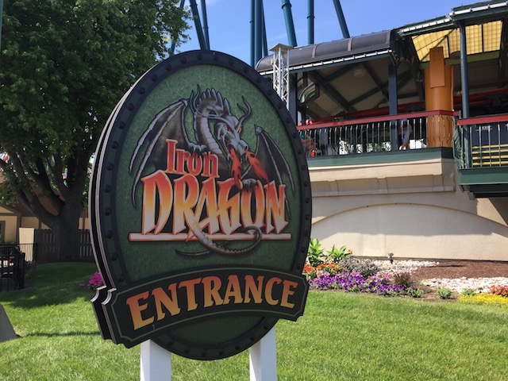

| |
Iron Dragon Review
We're here at Cedar Point. Today's ride we'll be reviewing for you is Iron Dragon. Now Iron Dragon is a very unique ride as it's an Arrow Suspended coaster. Lately, these rides have been dropping like flies. They've torn down Hayabusu at Tokyo Summerland, Eagles Fortress is now gone (NO!!!!!), and they've even torn down Big Bad Wolf at Busch Gardens Williamsberg! So I applaud Cedar Point for keeping Iron Dragon, even if it is the sh*ttiest for it's kind. Once you pull down the OTSRs, it's straight up the lifthill you go. Once you reach the top of the lifthill, you go down a straight drop and turn to your right. While there's not much swinging going on, it does feel cool going through the trees. We eventually make our way to some straight track. You get a nice view of Mantis and Power Tower through the trees. We then head straight into a large left turn. Now during this turn, we get awfully close to Mantis's lifthill. However, we never get the sensation of actually hitting it due to the lack of swinging it has. Afterwards, we head straight into a downward S Bend. We are pretty close to the ground at the bottom of the S Curve. We then turn left and head up. For the first time in the ride, we feel some swinging. We then rise up through a curve and head into some straight track. There you'll see Top Thrill Dragster slowing down, which will make you realize, "Damn! We're going pretty slow right now!" We then head into a sort of downward helix over the water before heading in the opposite direction. We then head up into a brake run and go up Lifthill #2. We then go straight into some sort of S Bend Drop that gives us a little bit of swinging action. We then turn left and get a nice clear view of the midway before turning left into a drop right over the water. There's mist at the bottom, so that's a nice touch. We then go into some sort of thing where we rise up into a turnaround only to turn back down and drop back down towards the water. Then you basically head straight into the brake run where we swing a little more. If you basically wanted to go on a suspended mine train, this is basically it. While it's a fun ride and all, Ninja, Vortex, and Bat are all much better Suspended Coasters. Back in 2007, I would've only recommended you ride Iron Dragon if you've never ridden a suspended coaster, were a credit whore, or were just getting into roller coasters. But now, I'd recommend everyone who goes to Cedar Point ride Iron Dragon. Because who knows how long it will be until the Suspended Coaster has completely died off?
5/10
Location: Cedar Point
Opened: 1987
Built by: Arrow
Last Ridden: June 20, 2021
Iron Dragon Photos




Home
|